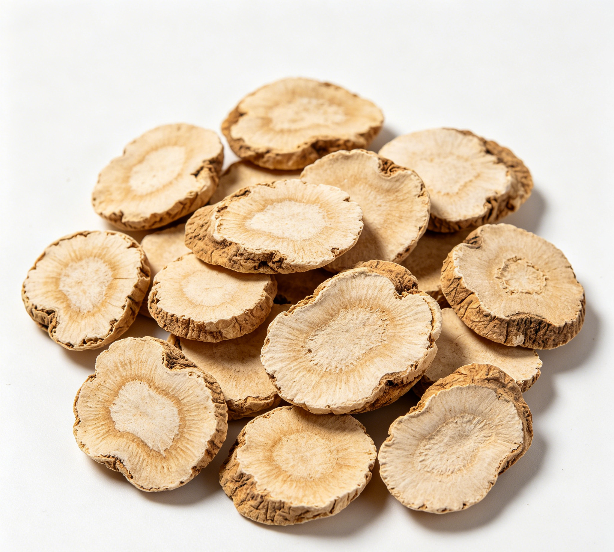

📋 基本信息
中文名山柰
拉丁名Kaempferia galanga L.
英文名Kaempferia Galanga L.
产地科：姜科（Zingiberaceae）；属：山柰属（Kaempferia）。主产于广东、广西，云南、海南、福建、台湾等地亦有栽培。
性状本品多为圆形或近圆形的横切片，直径1～2cm，厚0.3～0.5cm。外皮浅褐色或黄褐色，皱缩，有的有根痕或残存须根；切面类白色，粉性，常鼓凸。质脆，易折断。气香特异，味辛辣。（《中国药典》2020年版一部）
用法用量6～9g。（《中国药典》2020年版一部）
贮藏置阴凉干燥处。（《中国药典》2020年版一部）
☯ 传统属性
四气温
五味辛
归经胃经
功能主治行气温中，消食，止痛。用于胸膈胀满，脘腹冷痛，饮食不消。（《中国药典》2020年版一部）
禁忌症阴虚火旺、胃热津伤者慎服；本品辛温香燥，不宜过量久服；孕妇慎用。【来源：《中华本草》及公开食疗文献整理】
毒性作为调味料常规用量安全性好；过量食用可致口干、咽痛、胃部灼热等'上火'表现；所含挥发油对黏膜有一定刺激性，大量服用可致胃肠不适；外用鲜品捣敷偶见皮肤刺激、接触性皮炎。
适宜体质气虚质、平和质、阳虚质、血瘀质
适宜证型气虚证、脾胃气虚证、阳虚证、肾阳虚证
🔬 现代研究
主要成分主要含挥发油（含量可达3%～5%以上），主成分为反式-对甲氧基肉桂酸乙酯、对甲氧基肉桂酸乙酯、肉桂酸乙酯、龙脑、桉油精、莰烯、对甲氧基苯乙烯等；另含黄酮类成分山柰酚（kaempferol）、山柰素（kaempferide）及多糖、微量元素等。对甲氧基肉桂酸乙酯为其特征性成分及药典薄层鉴别指标。
药理作用已报道的药理活性包括：抑菌（对金黄色葡萄球菌、大肠杆菌及常见皮肤真菌等有抑制作用）、抗炎、抗氧化、促进胃肠运动与消化液分泌、镇痛、杀虫驱避等；对甲氧基肉桂酸乙酯被报道具有抗肿瘤细胞增殖、抗血小板聚集及防晒（吸收紫外线）活性；山柰酚具有抗氧化、抗炎、心血管保护等作用。
食疗功效食疗上取其温中散寒、行气消食、开胃健脾之功，常用于胃寒呕吐、脘腹冷痛、食积不化的辅助调理；沙姜配鸡、配猪肚，既调味又助运化，为岭南冬季温补膳食常用香料。
食养禁忌
🏭 产品形态与潜在功能
推荐形态
饮片粉末胶囊
潜在功能